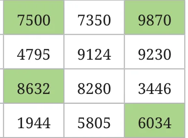
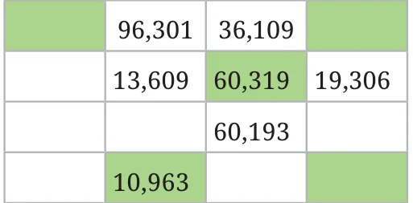

<!DOCTYPE html>
<html lang="en">
<head>
<meta charset="UTF-8">
<meta name="viewport" content="width=device-width,initial-scale=1">
<title>Figure it Out — Number Play</title>
<meta name="description" content="Class 6 Mathematics · Number Play · Figure it Out">
<link rel="icon" href="data:image/svg+xml,<svg xmlns='http://www.w3.org/2000/svg' viewBox='0 0 100 100'><text y='.9em' font-size='90'>📘</text></svg>">
<link rel="stylesheet" href="../../../assets/book.css">
<link rel="stylesheet" href="https://cdn.jsdelivr.net/npm/katex@0.16.11/dist/katex.min.css" crossorigin="anonymous">
</head>
<body>
<header class="topbar">
<div class="topbar-in">
  <div class="crumb">
    <span class="c1"><a href="../../../index.html">Library</a> · <a href="../../index.html">Class 6 Mathematics</a></span>
    <span class="c2">Number Play · Figure it Out</span>
  </div>
  <a class="tb-btn" data-nav="prev" href="../../03-number-play/02-supercells-3.2/index.html" title="3.2 Supercells">←</a>
  <details class="drawer"><summary class="tb-btn" title="Sections in this chapter">☰</summary>
<div class="drawer-panel"><div class="dh">Number Play</div><a href="../01-chapter-opener/index.html">Chapter opener; 3.1 Numbers can Tell us Things; What are these numbers telling us?</a><a href="../02-supercells-3.2/index.html">3.2 Supercells</a><a href="../03-figure-it-out/index.html" aria-current="page">Figure it Out</a><a href="../04-patterns-of-numbers-on-the-number-line-3.3/index.html">3.3 Patterns of Numbers on the Number Line</a><a href="../05-playing-with-digits-3.4/index.html">3.4 Playing with Digits</a><a href="../06-digit-sums-of-numbers/index.html">Digit sums of numbers</a><a href="../07-figure-it-out/index.html">Figure it Out</a><a href="../08-pretty-palindromic-patterns-3.5/index.html">3.5 Pretty Palindromic Patterns</a><a href="../09-the-magic-number-of-kaprekar-3.6/index.html">3.6 The Magic Number of Kaprekar</a><a href="../10-clock-and-calendar-numbers-3.7/index.html">3.7 Clock and Calendar Numbers</a><a href="../11-figure-it-out/index.html">Figure it Out</a><a href="../12-mental-math-3.8/index.html">3.8 Mental Math</a><a href="../13-figure-it-out/index.html">Figure it Out</a><a href="../14-playing-with-number-patterns-3.9/index.html">3.9 Playing with Number Patterns</a><a href="../15-an-unsolved-mystery-the-collatz-conjecture-3.10/index.html">3.10 An Unsolved Mystery — the Collatz Conjecture!</a><a href="../16-simple-estimation-3.11/index.html">3.11 Simple Estimation</a><a href="../17-figure-it-out/index.html">Figure it Out</a><a href="../18-games-and-winning-strategies-3.12/index.html">3.12 Games and Winning Strategies</a><a href="../19-figure-it-out/index.html">Figure it Out</a><a href="../20-summary/index.html">Summary</a><a href="../21-solutions/index.html">CHAPTER 3 — SOLUTIONS</a></div></details>
  <a class="tb-btn" data-nav="next" href="../../03-number-play/04-patterns-of-numbers-on-the-number-line-3.3/index.html" title="3.3 Patterns of Numbers on the Number Line">→</a>
  <button class="tb-btn" data-theme-toggle title="Toggle light / dark" aria-label="Toggle light or dark theme">◐</button>
</div>
<div class="progress"><span style="width:22.7%"></span></div>
</header>
<main class="wrap">
<div class="sec-head">
  <p class="eyebrow"><a href="../index.html">Chapter 3 · Number Play</a></p>
  <h1>Figure it Out</h1>
  <p class="sec-meta">Textbook pages 3–5 · 8 figures</p>
</div>
<article class="prose">
<ul class="qlist">
<li><span class="mk">1.</span><span class="lt">Colour or mark the supercells in the table below.</span></li>
</ul>
<p>6828 670 9435 3780 3708 7308 8000 5583 52</p>
<ul class="qlist">
<li><span class="mk">2.</span><span class="lt">Fill the table below with only 4-digit numbers such that the</span></li>
</ul>
<p>supercells are exactly the coloured cells.</p>
<figure class="fig table-fig wide"></figure>
<p>5346</p>
<ul class="qlist">
<li><span class="mk">3.</span><span class="lt">Fill the table below such that we get as many supercells as possible.</span></li>
</ul>
<p>Use numbers between 100 and 1000 without repetitions.</p>
<ul class="qlist">
<li><span class="mk">4.</span><span class="lt">Out of the 9 numbers, how many supercells are there in the table</span></li>
</ul>
<p>above? ___________</p>
<ul class="qlist">
<li><span class="mk">5.</span><span class="lt">Find out how many supercells are possible for different</span></li>
</ul>
<figure class="fig side-fig"></figure>
<p>numbers of cells.</p>
<p>Do you notice any pattern? What is the method to fill a given table to get the maximum number of supercells? Explore and share your strategy.</p>
<ul class="qlist">
<li><span class="mk">6.</span><span class="lt">Can you fill a supercell table without repeating numbers such</span></li>
</ul>
<figure class="fig side-fig"></figure>
<p>that there are no supercells? Why or why not?</p>
<ul class="qlist">
<li><span class="mk">7.</span><span class="lt">Will the cell having the largest number in a table always be a</span></li>
</ul>
<p>supercell? Can the cell having the smallest number in a table be a supercell? Why or why not?</p>
<ul class="qlist">
<li><span class="mk">8.</span><span class="lt">Fill a table such that the cell having the second largest number</span></li>
</ul>
<p>is not a supercell.</p>
<ul class="qlist">
<li><span class="mk">9.</span><span class="lt">Fill a table such that the cell having the second largest</span></li>
</ul>
<p>number is not a supercell but the second smallest number is a supercell. Is it possible?</p>
<ul class="qlist">
<li><span class="mk">10.</span><span class="lt">Make other variations of this puzzle and challenge your</span></li>
</ul>
<p>classmates.</p>
<p>Let’s do the supercells activity with more rows. Here the neighbouring cells are those that are immediately to the left, right, top and bottom. Table 1 The rule remains the same­: a cell becomes a supercell if the 2430 number in it is greater than all the numbers in its neighbouring 3115 cells. In Table 1, 8632 is greater 4580 than all its neighbours 4580, 8280, 4795 and 1944. 5785 Complete Table 2 with 5-digit numbers whose digits are ‘1’, Table 2 ‘0’, ‘6’, ‘3’, and ‘9’ in some order. Only a coloured cell should have a number greater than all its neighbours. The biggest number in the table is ____________ .</p>
<figure class="fig table-fig side-fig"></figure>
<figure class="fig table-fig"></figure>
<p>The smallest even number in the table is ____________.</p>
<p>The smallest number greater than 50,000 in the table is ____________.</p>
<p>Once you have filled the table above, put commas appropriately after the thousands digit.</p>
</article>
<nav class="pager"><a class="" data-nav="prev" href="../../03-number-play/02-supercells-3.2/index.html"><span class="dir">← Previous</span><span class="t">3.2 Supercells</span><span class="ch">Number Play</span></a><a class="nx" data-nav="next" href="../../03-number-play/04-patterns-of-numbers-on-the-number-line-3.3/index.html"><span class="dir">Next →</span><span class="t">3.3 Patterns of Numbers on the Number Line</span><span class="ch">Number Play</span></a></nav>
</main><footer class="site">Generated from the source textbook PDFs · text, figures and exercises belong to their respective publishers.</footer><script defer src="https://cdn.jsdelivr.net/npm/katex@0.16.11/dist/katex.min.js" crossorigin="anonymous"></script>
<script defer src="https://cdn.jsdelivr.net/npm/katex@0.16.11/dist/contrib/auto-render.min.js" crossorigin="anonymous"
  onload="renderMathInElement(document.body,{delimiters:[
    {left:'\\(',right:'\\)',display:false},
    {left:'$$',right:'$$',display:true},
    {left:'\\[',right:'\\]',display:true}],throwOnError:false,ignoredTags:['script','noscript','style','textarea','pre','code']})"></script>
<script src="../../../assets/book.js"></script>
<script defer src="../../../../assets/search.js?v=1789782769"></script>
<script defer src="../../../../assets/screenshot.js?v=2"></script>
</body>
</html>
